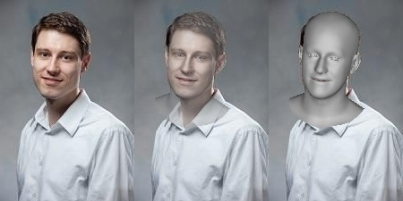
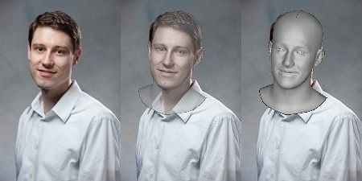
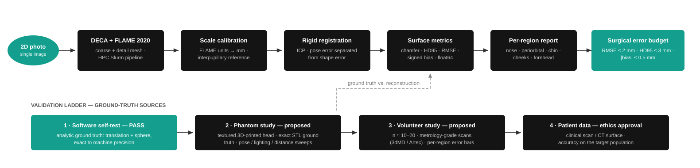

DECA + FLAME reconstruction
Coarse and detail-mesh reconstruction from a single photograph.
Single-photograph 3D face reconstruction with DECA and the FLAME 2020 model on the RPTU Elwetritsch HPC — feature-preserving coarse and detail meshes, an exact surface-distance metric suite, and a phantom-to-patient validation ladder toward surgical use.
Coarse and detail-mesh reconstruction from a single photograph.


